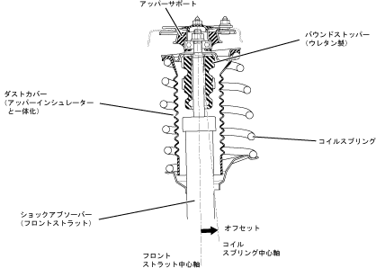

| Upper support & coil spring |
| ● |
Convenient type upper support has been adopted.It has a rebound stopper structure, and has both the improvement of the absorber damping force and the riding comfort at low load.
|
| ● |
The bound stopper is made of urethane made to a soft nonlinear characteristics to hit, and it has a flexible ride to ensure roll rigidity during turning.
|
| ● |
The coil spring reduced the horizontal force to the shock absorber generated during spring expansion by placing the central axis to the center axis to the center axis, reducing friction.In addition, by adopting a high -stress spring, the wire diameter is thin, the number of winding has been reduced, and a significant weight reduction has been achieved.
|
| ● |
I adopted an integrated dust cover type upper insulator.
|
|  |